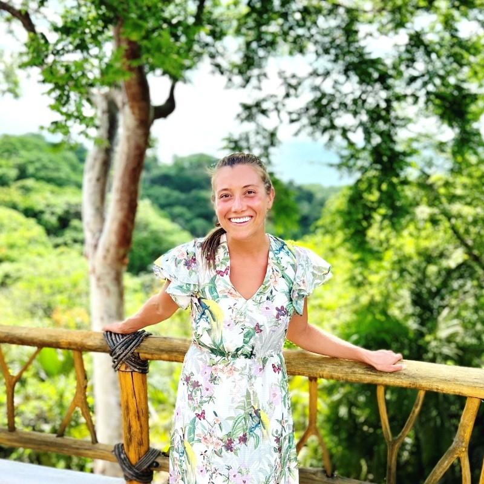

Kazu Yanagisawa
Author of this archive and a Bachelors of Arts (Economics) candidate at UCLA. Kazu developed this project to preserve and contextualize testimony from Myanmar, pairing human interpretation with digital archival methods.
An archive of testimony, survival, and reslience in Myanmar.
This archive focuses on testimony emerging from the ongoing conflict and humanitarian crisis in Myanmar as part of Digital Humanities 150: Artificial Intelligence and Automation in Humanities, an undergraduate UCLA course taught by Dr. Nick Sabo. The project is inspired by UCLA alumnus Jon Moss and his wife, Rachel Moss, as they selflessly devote their lives to the pursuit of freedom for others by volunteering with Free Burma Rangers, a non-profit organization aiming to find peace for the oppressed. Letters, personal accounts, and humanitarian media offer a small glimpse into everyday experiences of displacement, care, faith, and survival.
Rather than presenting these artifacts as neutral data, the archive treats them as forms of testimony. Interpretive notes examine how language, emotion, and narrative structure communicate human experience in Burma.
The project also evaluates how artificial intelligence tools interact with these materials. OCR, transcription, translation, image description, and sentiment analysis are tested to explore what machine methods can reveal and fail to capture about fragile human testimony.
The archive preserves not an abstract record of conflict, but moments in which people under dire circumstances remain connected to one another, search for hope of a more peaceful future, and exercise the resilience of the human spirit.
Author of this archive and a Bachelors of Arts (Economics) candidate at UCLA. Kazu developed this project to preserve and contextualize testimony from Myanmar, pairing human interpretation with digital archival methods.

Free Burma Rangers volunteer and former U.S. Navy EOD technician. Jon served as a research source for this archive, contributing practical field insight on humanitarian response, demining, and conflict conditions.

Former Wounded Warrior trauma therapist and Free Burma Rangers volunteer. Rachel served as a research source for this archive, offering expertise on trauma care, recovery, and community support in conflict settings.